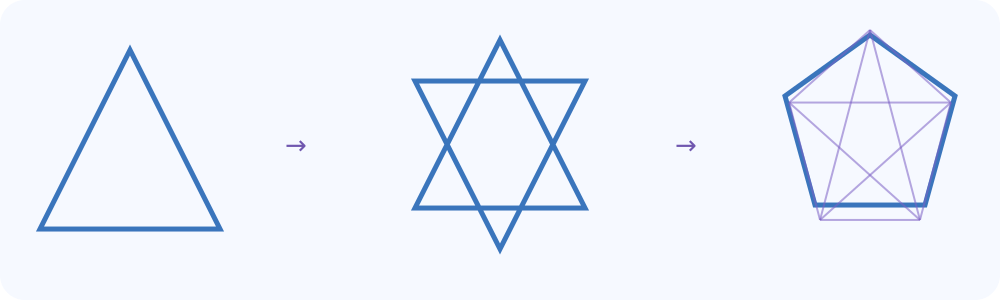

Tensor
Tensor1 · Eingabe
Ein Punkt p = (1,0) und ein frei wählbarer Winkel θ. Die Ausgangsdaten sind vollständig beschreibbar.
p = (1,0), θ = 45°
Geo-KI · Von sichtbaren Regeln zu wissenschaftlichen Fähigkeiten
Was ist eine Rotation? Welche Eigenschaft bleibt bei ihr erhalten? Wie lassen sich Regeln kombinieren, um viele neue Formen zu erzeugen? Und woran erkennen wir, ob eine Berechnung richtig ist? Diese Fragen verbinden Mathematik, Visualisierung, Skills und Forschungsprüfung.
Geo-KI · Grundlagen
Wir starten mit einem Punkt auf einer Ebene. Eine Drehung verändert seine Koordinaten, aber nicht seinen Abstand zum Drehzentrum. Diese einfache Beziehung liefert bereits drei verknüpfte Lernfragen: Was kommt hinein? Was passiert? Was bleibt gleich?
Ein Punkt p = (1,0) und ein frei wählbarer Winkel θ. Die Ausgangsdaten sind vollständig beschreibbar.
p = (1,0), θ = 45°
Die Rotation Rθ dreht den Punkt um den Koordinatenursprung.
Rθ(x,y) = (x cos θ − y sin θ, x sin θ + y cos θ)
Die Position verändert sich, während die Länge erhalten bleibt. Das ist eine überprüfbare mathematische Aussage.
∥Rθ(p)∥ = ∥p∥ = 1
Überprüfe selbst: Welchen Winkel musst du wählen, damit der Punkt wieder an seiner ursprünglichen Position liegt? Und weshalb funktioniert die Rückdrehung auch mit einem negativen Winkel?
Schritt 2 · Interaktives Experiment
Bewege den Regler. Vergleiche die angezeigten Koordinaten mit der unveränderten Norm. Die Browserberechnung setzt eine bekannte mathematische Operation um; sie ist keine bereits selbstlernende KI.
Eingabe: Punkt (1, 0), Winkel θ.
Operator: (x cos θ − y sin θ, x sin θ + y cos θ).
Invariante: Die euklidische Norm bleibt erhalten.
Test: Drehe um θ und anschließend um −θ; der ursprüngliche Punkt wird bis auf Rundungsfehler rekonstruiert.
Technischer Prüflauf: 14 / 14 Tests bestanden, erneut am 01.11.2026 ausgeführt.
Dies sind Softwaretests geometrischer Funktionen, keine Bestätigung des gesamten KI-Modells.
Das Diagramm zeigt drei Ebenen mit je neun Positionen. Eine ausgewählte Adresse ist zunächst eine Position im Forschungsmodell. Der Inhalt einer Zelle wird erst mit einer konkreten wissenschaftlichen Feldakte und Quellen verknüpft.
Gewählte Adresse: T1.E1.R1
Hier steht T für die nummerierte Trinität 1 bis 3, nicht für die historischen T1/T3/T5-Kennungen eines anderen Achsenmodells.
Die 27 Positionen bilden eine Adressordnung; daraus folgen noch keine fachlich validierten Relationen.Die Grafik erklärt die Datenstruktur. Sie behauptet keine mathematische Gleichwertigkeit verschiedener Fachmodelle.
Bilddatenschema (JSON)Ein kleiner geometrischer Kern kann zahlreiche Bilder berechenbar erzeugen. Hier bestehen Grundformen aus Punkten, Linien oder einer parametrischen Kurve. Durch Größe, Drehwinkel, Anzahl und Wiederholungsregel ändern sich die sichtbaren Figuren – ohne jede Variante als einzelnes Bild speichern zu müssen.
Entwickle weitere Geo-KI-Formen mit · Grafikvorlagen und Quellen
Verändere wenige Parameter, entdecke neue Figuren und entwickle daraus deinen eigenen geometrischen Operator.


Geo-KI · Mathematische Rückprüfung
Bei einer Rotation können wir sowohl die Längenerhaltung als auch die Zusammensetzung von zwei Drehungen überprüfen. Wir nutzen dafür absichtlich denselben Punkt (1,0) wie im Experiment.
Prüfregel: Rβ(Rα(p)) = Rα+β(p). Außerdem gilt R−α(Rα(p)) = p bis auf numerische Rundungsfehler.
Erhalte den Abstand vom Drehzentrum. Nicht jede Transformation hat diese Eigenschaft: Skalierung verändert ihn.
Zwei Drehungen um dasselbe Zentrum entsprechen einer einzigen Drehung um die Summe der Winkel.
Vergleiche mit einer anderen Operation: Scherung oder nichttriviale Skalierung erhalten im Allgemeinen keine Längen.
Dieses Experiment zeigt überprüfbare Eigenschaften der euklidischen Rotation. Die 14 berichteten Tests betreffen einen größeren Python-Geometriekern; sie ersetzen keine unabhängige Prüfung des Browsercodes.
Geo-KI · Operatorbibliothek und anschließende Werkzeuge
In der öffentlichen Geo-KI-v0.4-Datei liegen bereits 13 implementierte Python-Funktionen. Dazu zählen Rotation, Flächenberechnung, Translation, Spiegelung, Skalierung, affine Transformation, Bézierkurve, Segment-Schnitt und Euler-Schritt. Acht weitere Format-/Skillfamilien sind bisher Integrationskandidaten, nicht fertig eingebundene Module.
Ausführbare Funktionen mit Quellcode, Signatur und dokumentiertem Testbericht.
Implementierte Skills durchsuchenFunktionen dürfen nur mit kompatiblen Datenräumen, Einheiten, Formaten und sauberer Fehlerbehandlung verkettet werden.
Schnittstellen und FormateEin Generator ist noch keine lernende KI. Erst Auswahl, Planung, Selbstkontrolle, Transfer und externe Gegenproben begründen weitergehende KI-Thesen.
KI-Lernen und Skillbenchmarks13 Funktionen und acht Kandidatenfamilien als JSONPython-OriginalTestbericht · 14/14
Geo-KI · Forschungsaufgabe
Verändere einen Parameter oder kombiniere zwei bestehende Operatoren und dokumentiere die Eingaben.
Welche Eigenschaft soll sich erhalten? Welche zwei Eingaben müssten zu unterschiedlichen Ergebnissen führen?
Rechne vorwärts und – wo möglich – zurück, teste einen Gegenfall und vergleiche mit einer anerkannten Bibliothek.
Mitmachprojekt GEO-OPS-01Geo-KI-ProjektstatusGrundlagen und Medienbibliothek
Aus wenigen Regeln entstehen viele geometrische Varianten. Wir verbinden dafür symbolische Mathematik, robuste Flächenoperationen, SVG-Bearbeitung, CAD, Geodaten und 3D – mit prüfbaren Operatoren, nachvollziehbaren Formaten und rückrechenbaren Ergebnissen.
Diese Werkzeuge sind vorhandene Bibliotheken und Integrationskandidaten – nicht als bereits im Geo-KI-Kern installierte Adapter ausgewiesen. Versionen, Lizenzen, Einheiten und Datenverluste sind je Aufgabe zu prüfen.
Forschungs- und Skillplan lesen · Deep Dive der Formate und Standards
Entwickle aus einem geometrischen Muster eine überprüfbare neue Operation: Form erzeugen, Regeln kombinieren, Eigenschaften vergleichen, zurückrechnen und das Ergebnis als SVG oder Datensatz veröffentlichen.
Formen erforschen und Geo-KI-Skills entwickeln · Den ausführbaren Geo-KI-Meilenstein übernehmen · Neue Format-Skills erschließen
SymPy, Shapely/GEOS, CGAL, Open CASCADE, QGIS und PostGIS übernehmen unterschiedliche Geometrie-, GIS- oder Datenaufgaben. Eine wissenschaftliche Geo-KI sollte diese Verfahren anhand ihrer Eingaben, Operatoren, Gültigkeitsbedingungen, Ergebnisse und Gegenproben vergleichen und sinnvoll verbinden.
Bestehende Geometriesysteme, Datenbanken und Standards vergleichen · Geometrie-Schnittstellen · Geo-KI-Folgeaufgaben
Eine Modellbeschreibung oder ein gültiger Einzeltest belegt nicht automatisch die weitergehende Forschungsbehauptung. Hier werden der begrenzte Nachweis, der nötige Gegenversuch und der Anschluss zum Thesenatlas sichtbar.
Die thematischen Evidenzkarten werden geladen. Zur Quellen- und Thesenübersicht.
Parametrische Regeln, geometrische Operatoren und ihre Umkehrprüfungen lassen sich schon mit bestehenden Werkzeugen aufbauen. Geo-KI untersucht, welche Kompositionen neue zuverlässige Formfamilien erzeugen und wann Wiederverwendung gegenüber Neuentwicklung überlegen ist. Das ist eine eigenständige Forschungslinie und kein Nachweis einer allgemeinen Tensor-KI.
Bestehende Bibliotheken und Datenbanken · Offene Prüfaufgaben.